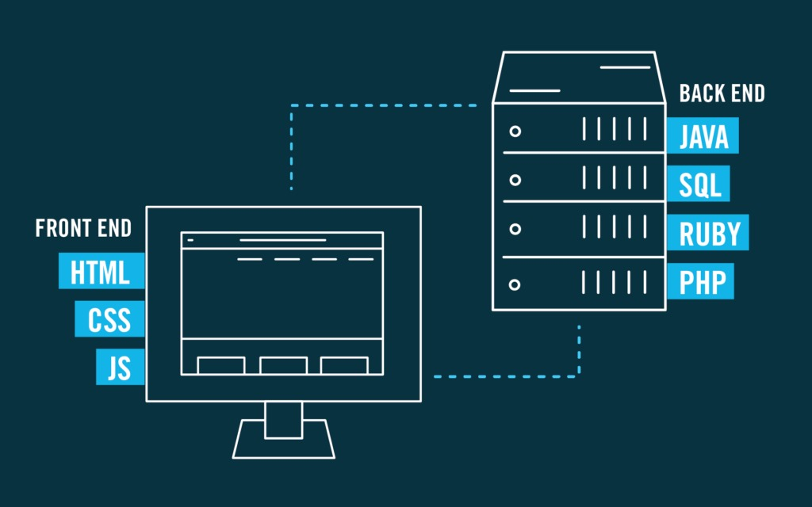

UNIDAD 1: Introduccion a las aplicaciones web
Introduccion

Las aplicaciones web son programas informáticos diseñados para funcionar a través de un navegador web. A diferencia de las aplicaciones tradicionales que se ejecutan en el escritorio de un dispositivo, las aplicaciones web operan en un servidor remoto y se accede a ellas a través de la interfaz de un navegador.
Este enfoque brinda varias ventajas, incluyendo la accesibilidad desde cualquier lugar con conexión a Internet y la eliminación de la necesidad de instalaciones locales.
1.1 Evolucion de las aplicaciones web
La evolución de las aplicaciones web ha sido marcada por avances tecnológicos, cambios en la forma en que los usuarios interactúan con la web y la creciente demanda de experiencias más ricas y dinámicas.
-
HTML y Páginas Estáticas (Década de 1990):
Las primeras aplicaciones web consistían principalmente en páginas estáticas construidas con HTML. La interactividad era limitada, y las páginas eran estáticas en el sentido de que no cambiaban dinámicamente en respuesta a las acciones del usuario.
-
Introducción de CSS y JavaScript (Finales de la Década de 1990 - Principios de la
Década de 2000):
La adopción de CSS permitió un mayor control sobre la presentación y el diseño de las páginas web. La introducción de JavaScript brindó la capacidad de agregar interactividad y dinamismo a las aplicaciones web, permitiendo a los desarrolladores crear experiencias más atractivas para los usuarios.
-
Auge de AJAX (Principios de la Década de 2000):
La tecnología AJAX (Asynchronous JavaScript and XML) permitió la carga asincrónica de datos, lo que significaba que las aplicaciones web podían actualizar partes específicas de la página sin recargarla por completo. Esto llevó a una experiencia de usuario más fluida y rápida, similar a la de las aplicaciones de escritorio.
-
Web 2.0 y Aplicaciones Ricas en Contenido (Mediados de la Década de 2000):
La denominada "Web 2.0" se caracterizó por la colaboración y la interactividad mejoradas. Las aplicaciones web comenzaron a ofrecer funciones más avanzadas, como redes sociales, servicios en la nube y aplicaciones basadas en la participación del usuario.
-
Auge de los Frameworks Frontend y Backend (Década de 2010):
Se popularizaron los frameworks frontend como Angular, React y Vue.js, que facilitaron el desarrollo de interfaces de usuario complejas y dinámicas. En el backend, se utilizaron frameworks como Django, Flask, Ruby on Rails y Express para simplificar el desarrollo del lado del servidor.
-
Enfoque en Desarrollo Full Stack y Arquitecturas de Microservicios (Década de 2010 -
Actualidad):
Se ha producido un énfasis en el desarrollo full stack, donde los desarrolladores trabajan tanto en el frontend como en el backend de las aplicaciones web. Además, las arquitecturas de microservicios han ganado popularidad, permitiendo la construcción de aplicaciones escalables y modularizadas.
-
Adopción de Tecnologías Progressive Web App (PWA) y Single Page App (SPA)
(Actualidad):
Las Progressive Web Apps (PWAs) ofrecen características como la capacidad de trabajar sin conexión, notificaciones push y un rendimiento optimizado. Las Single Page Apps (SPAs) proporcionan una experiencia de usuario fluida al cargar solo una página y actualizar dinámicamente el contenido según sea necesario.
1.2 Arquitectura de las aplicaciones web
La arquitectura de las aplicaciones web se refiere a la estructura y organización general de los componentes que componen una aplicación.
-
Frontend(Lado del Cliente)
El frontend es la parte de la aplicación con la que los usuarios interactúan directamente. Incluye la interfaz de usuario, la presentación visual y la lógica del cliente que se ejecuta en el navegador del usuario.
-
Backend (Lado del Servidor)
El backend se encarga de la lógica de la aplicación, el procesamiento de datos y la comunicación con la base de datos. Maneja las solicitudes del frontend y devuelve las respuestas correspondientes.
-
Comunicación entre Frontend y Backend
La comunicación entre el frontend y el backend se realiza mediante solicitudes HTTP. El frontend realiza solicitudes al backend para obtener o enviar datos, y el backend responde a esas solicitudes proporcionando la información necesaria
1.3 Tecnologias para el desarrollo de aplicaciones web
Las tecnologías para el desarrollo de aplicaciones web son conjuntos de herramientas, lenguajes de programación, frameworks, bibliotecas y servicios que permiten a los desarrolladores crear aplicaciones web efectivas y eficientes.
-
HTML (Hypertext Markup Language):
HTML es un lenguaje de marcado utilizado para estructurar el contenido de una página web. Utiliza etiquetas para definir elementos como encabezados, párrafos, enlaces, imágenes, formularios, entre otros.
-
CSS (Cascading Style Sheets)
CSS es un lenguaje de estilo utilizado para controlar la presentación y el diseño de documentos HTML. Permite aplicar estilos a elementos individuales o conjuntos de elementos.
-
JavaScript
JavaScript es un lenguaje de programación de alto nivel que permite agregar interactividad y dinamismo a las páginas web. Se ejecuta en el navegador del usuario.
-
React
React es una biblioteca de JavaScript desarrollada por Facebook para construir interfaces de usuario reactivas y eficientes.
-
Node.js
Node.js es un entorno de ejecución de JavaScript del lado del servidor que permite ejecutar código JavaScript fuera del navegador.
1.4 Planificacion de aplicaciones web
La planificación de aplicaciones web es un proceso crucial para garantizar el éxito del proyecto. Aquí te presento una guía general que puedes seguir para planificar el desarrollo de una aplicación web
-
Definir Objetivos y Alcance
- Objetivo Principal: Define claramente el propósito de la aplicación web. ¿Qué problema resolverá? ¿Cuál es su objetivo principal?
- Alcance del Proyecto: Determina las características y funcionalidades específicas que incluirás en la aplicación
-
Investigación y Análisis:
- Investigación del Mercado: Examina aplicaciones similares y estudia las tendencias del mercado para entender las expectativas del usuario.
- Análisis de Competencia: Evalúa las fortalezas y debilidades de aplicaciones similares.
-
Identificación de Usuarios y Personas:
- Perfil de Usuarios: Define quiénes serán los usuarios de la aplicación.
- Personas: Crea perfiles detallados de usuarios para comprender sus necesidades y comportamientos.
-
Requerimientos Funcionales y No Funcionales:
- Funcionales: Enumera las funciones específicas que la aplicación debe realizar.
- PNo Funcionales: Incluye requisitos de rendimiento, seguridad, escalabilidad, etc.
Bibliografia
- Adrian. (2014, 4 marzo). 1.1 Evolución de las aplicaciones web. Unidad 1 Arquitectura. https://unidad1programacionweb.wordpress.com/2014/03/04/1-1-evolucion-de-las-aplicaciones-web/
- IngenioVirtual. (2018, 11 febrero). Conceptos básicos sobre tecnologías de desarrollo web. ingeniovirtual.com. https://www.ingeniovirtual.com/conceptos-basicos-sobre-tecnologias-de-desarrollo-web/